Bluehost needed a “north star” to unite around as they began the transformation from a web hosting service to a solutions platform. We created research-based UX personas to better communicate our users’ needs, then we designed a future vision to inspire and unite the efforts of the entire product organization.
Leadership
Workshop Facilitation
User Research
Information Architecture
UX/UI Design
Prototyping
Presentation
Bluehost started as a small hosting company in Provo Utah and grew into one of the world’s leading WordPress hosting services. Along the way, they expanded their technical product offerings and won a name for themselves with world-class customer support. Then they were acquired and grew even faster through extensive marketing efforts.
They have continued to grow year over year in a crowded market, however, all the focus on marking and adding new features has come at a cost. A large percentage of customers who sign up with the intentions of learning Wordpress and building out their online vision end up losing momentum and giving up. This means they no longer need their website or domain name and eventually they cancel their service.
It became clear that a renewed focus on our users and their experience was needed. The organization invested in building out the Product Design team. The new team quickly dove into the challenge.
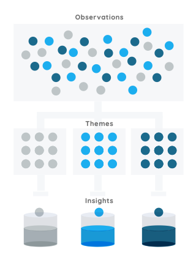
Over the course of 6 weeks, we interviewed 21 Bluehost customers with a mix of skill levels, genders, and website types. We collected over 1800 observations to get a better understanding of who our customers are and why they do what they do.
Through affinity mapping, we sorted the 1800 observations into themes, and then themes into insights.
7 different overarching insights emerged, along with 5 unique UX personas.
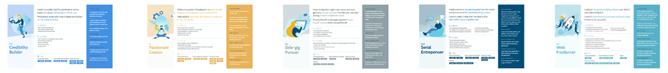
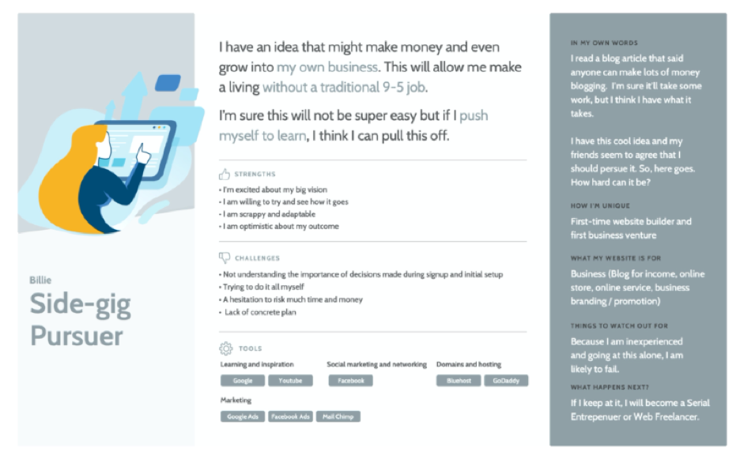
I facilitated 2 Design Sprints and several follow up workshops with cross-disciplinary representation. We unpacked the the challenge areas and identified a few key users and use cases. We defined the problem and clarified some initial goals.
These workshops not only yielded valuable insight and learning around our most important users needs, they also resulted in a deeper understanding and shared knowledge for the whole team. It helped breakdown traditional organizational barriers and dramatically improved the level of collaboration happening at the company.
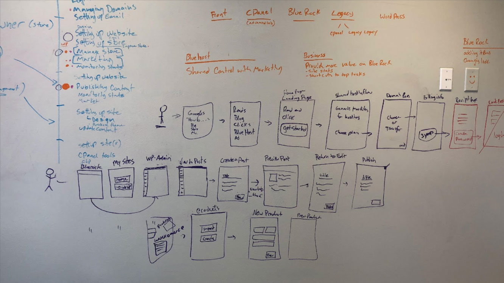
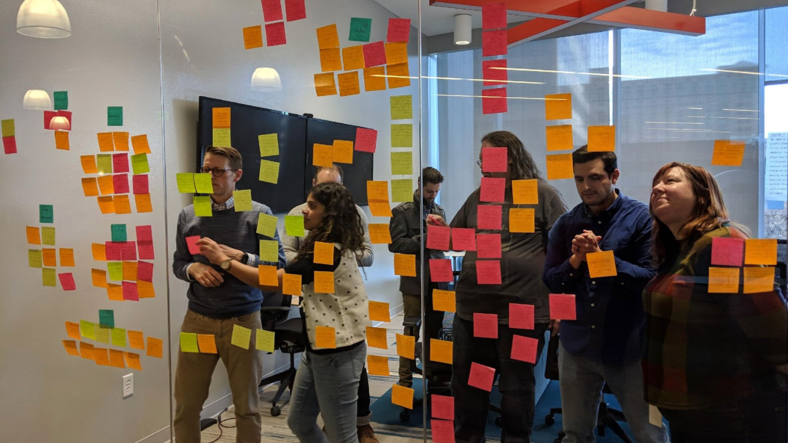
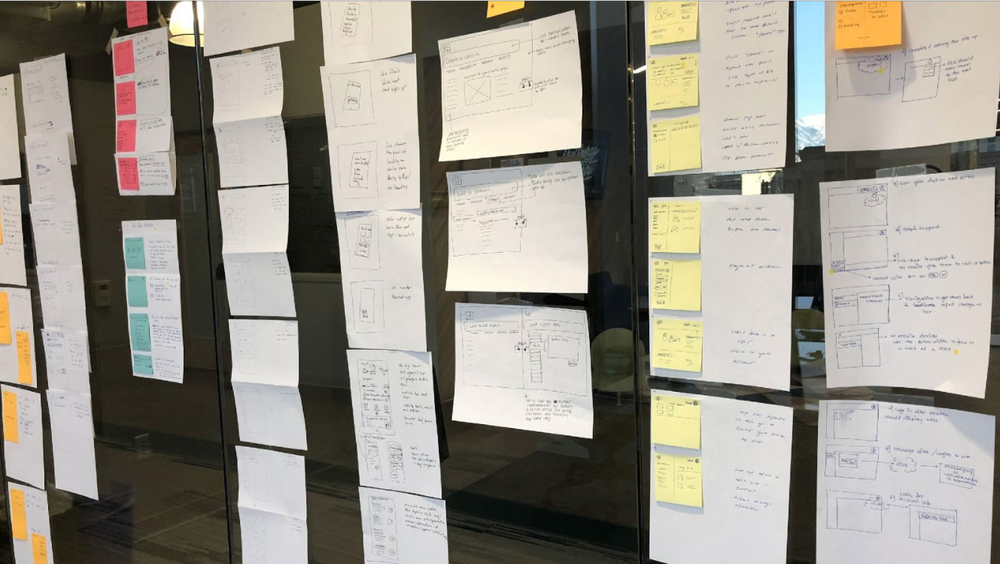
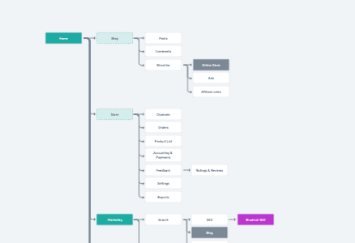
As the team leveraged the new insights and collaboration to forge ahead with several tactical initiatives, I and a few others on the team turned our focus on designing a north start vision of what a wholistic solution could look like down the road. Our intent was to challenge many of the real and perceived limitations from a business and technical perspective and inspire more long-term thinking with near-term tactical work.
After many iterations of the IA and several rounds of collaborative effort we completed a prototype that was able to tell the story we were looking for.
We showed a vision of how a simple guided user experience can lead users through logical choices. It shows how we could leverages technology to predict the users intent and do as much work as possible in the background.
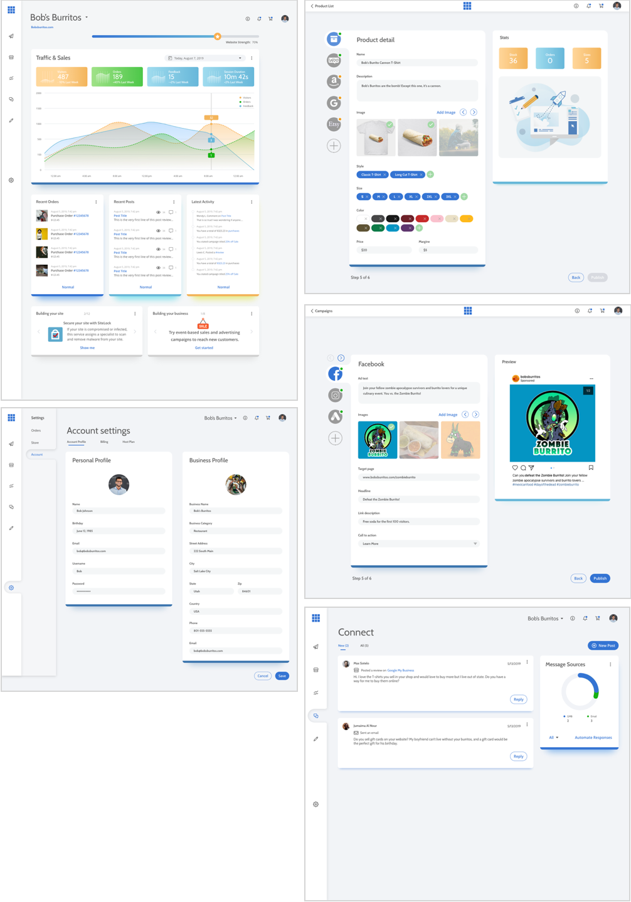
In the year and a half since this prototype was first socialized throughout the organization many many small steps have been made. Added up, these small steps have resulted in big product and org changes, many of which were originally thought to be either impossible or far too difficult. Some of the significant steps influenced by the vision work are:
A simplified site building experience that allows users to make quick progress on their site designs without limiting their ability to leverage all of the freedom and power of WordPress.
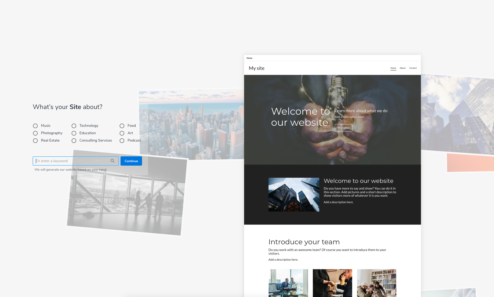
A curated set of add-on features positioned as marketing tools as a first step toward offering a wholistic marketing solution down the road.
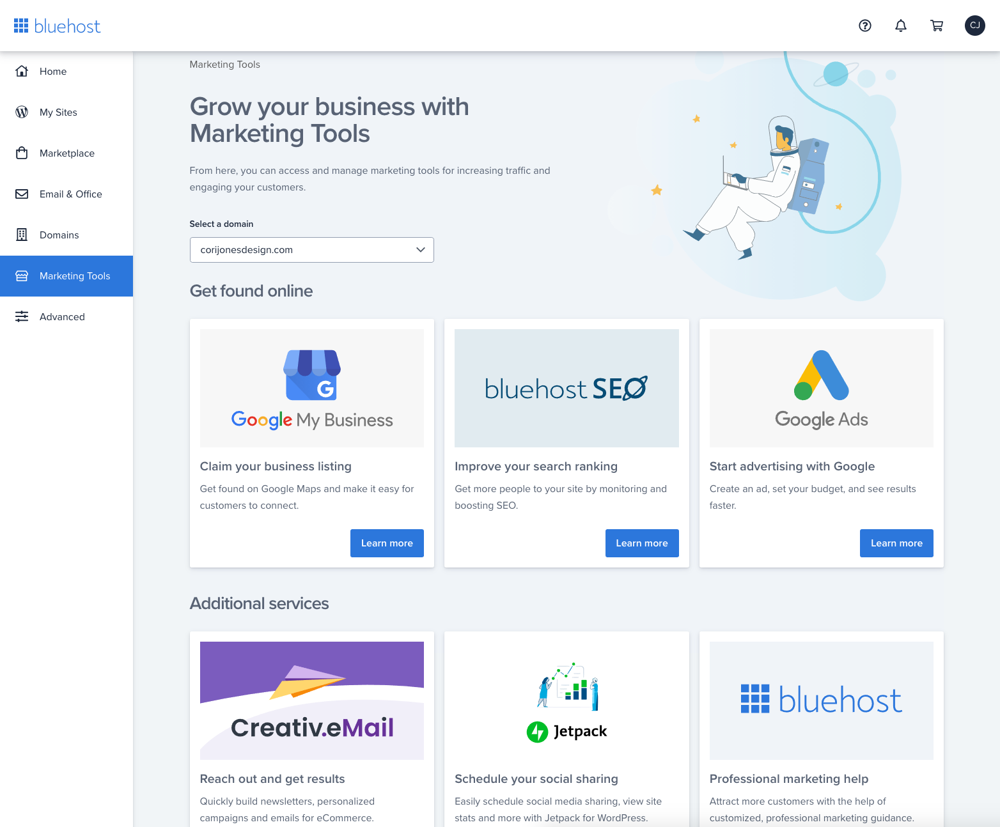
Major system architecture work is underway to allow more freedom in how the users, experience is presented. Project/site centric focus will allow for fewer clicks and more relevant context when they log in to Bluehost.
Key audience segments have been identified as opportunities for us to provide a focused solution experience around their needs and goals. These include the Blogger, E-commerce and several flavors of small business.
Here is an example of the updated blogger specific vision work that our team is now iterating towards.
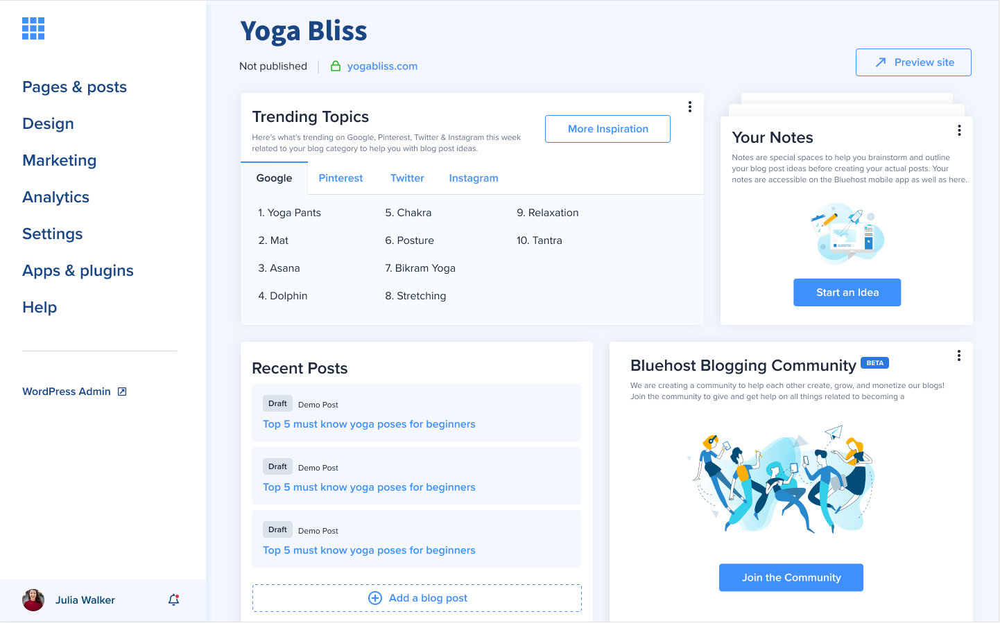